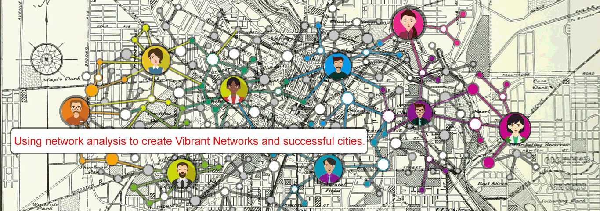
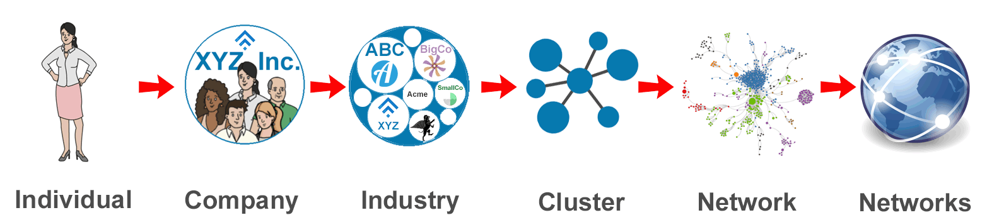
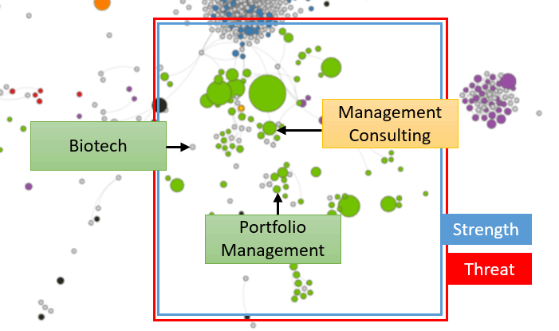

<div id="landing">
  <!-- <style>
    #traded-bubble-wrapper {
      height: 300px !important;
      width: 450px !important;
    }
    #traded-bubble-scale {
      bottom: 0px !important;
    }
    .floated-left {
      float: left;
    }
    .floated-right {
      float: right;
      shape-outside: circle();
    }
    .summary-img {
      width: 350px;
    }
  </style> -->

  
  <div id="landing-container">
    <h1 class="title">We provide FOCUS for economic development policymakers.
      <br>
    </h1>
    <h2 class="subtitle">We use network analysis to understand what's possible, probable, and optimal. We answer questions such as:</h2>
    <br>
    <br>
    <div id="bullets_container">
      <ul id="title_bullets">
        <li>What industries should a region target?</li>
        <li>How competitive are a region's existing businesses?</li>
        <li>How are regions' strengths and weaknesses different from each other?</li>
      </ul>
      </p>
    </div>
    <br>
    <br>
    <br>
    <p class="headline">Ever wondered why a company selected another region for its expansion? Should you have bid on HQ2? Are your existing
      businesses competitive? Vibrant Networks helps policymakers answer questions like these and create FOCUS for their
      strategies. We do this using analytics technology similar to Amazon and Google to understand the connection between
      individuals, companies, industries, clusters, networks, and the global economy.</p>
    <br>
    <br>
    <br>
    <p>
      
    </p>
    <br>
    <br>
    <br>
    <p class="headline">To understand how this works, watch the video below, or continue scrolling and see an example of the data that goes into
      our analysis.</p>
    <br>
    <br>
    <br>

    <div class="videoWrapper">
      <iframe width="853" height="505" src="https://www.youtube.com/embed/zMFRB6LtnL4" frameborder="0" allow="autoplay; encrypted-media"
        allowfullscreen></iframe>
    </div>
    <br>
    <br>
    <br>

    <p class="headline">For a demonstration, click a city below. These are preliminary analyses, intended to create focus for the early stages
      of a strategy-creation process.</p>
    <br>
    <div id="cities-img-wrapper"></div>
    <!-- <div id="cities-img-wrapper">
      <div class="city-img-wrapper" data-city="Austin">
        <div class="city-img">
          
          <p>Austin, Texas</p>
        </div>
      </div>
      <div class="city-img-wrapper" data-city="Tupelo">
        <div class="city-img">
          
          <p>Tupelo, Mississippi</p>
        </div>
      </div>
      <div class="city-img-wrapper" data-city="Detroit">
        <div class="city-img">
          
          <p>Detroit, Michigan</p>
        </div>
      </div>
    </div> -->
    <br>
    <br>

    <div id="landing-content">
      <!-- <div style="width:100%;min-height:350px;">
        <div class="floated-right">
          <h3 class="center big-title">What Austin does</h3>
          <h5 class="center small-title">Number of Employees by Industry</h5>
          <div id="landing-traded" style="position:relative;">
            <div id="traded-wrapper">
              <div id="traded-bubble-wrapper">
                <div class="svg-wrapper">
                  <svg></svg>
                  <div id="traded-bubble-legend">
                    <div>
                    </div>
                  </div>
                  <div id="traded-bubble-scale">
                    <div>
                      
                      <p>Size by # Employees</p>
                    </div>
                  </div>
                </div>
              </div>
            </div>
          </div>
        </div>

        <span id="traded-text"></span>

      </div>

      <br>

      <div id="network-wrapper" style="width: 100%;">
        <h3 class="center big-title">How
          <span class="city"></span>’s industries relate to each other</h3>
        <h5 class="center small-title">A network map that positions industries and clusters based on similarity</h5>
        <iframe width="1115" height="608px" src="austin.html"></iframe>
      </div>

      <br>

      <p>(Note: Gray circles mean that the region has little/no activity in that industry)</p>

      <br>

      <div style="width:100%;">
        <div class="floated-left">
          
        </div>
        <span id="summary-text"></span>
      </div>

      <br> -->
    </div>

    <!-- <div id="landing-content" class="hidden">
      <div id="top-all-cities-text">
        <p>Most practitioners define their regions differently than
          <a href="img/region_types.gif" target="_blank">Census areas</a> or
          <a href="img/cz_map.png" target="_blank">Commuting Zones</a>. For the network analysis, I organized data by Commuting Zones, but we can also create analysis
          using custom regions.
      </div>
      <br>
      <div id="region-def"></div>
      <br>
      <div id="counties-img-wrapper">
        
      </div>
      <br>
      <p>After defining the region, we follow a process very similar to Ricardo Hausmann's
        <a href="http://atlas.cid.edu" target="_blank">Atlas of Economic Complexity</a>. The next step is to learn what
        <span class="city"></span> does, in terms of the number of employees per industry. To to this, I created an algorithm to re-identify
        data withheld by the Census Bureau, and then converted all industry data to 2012 NAICS definitions. Next, we sort
        the industries into “Traded” and “Local”, as defined by
        <a href="https://clustermapping.us/sites/default/files/files/page/Categorization%20of%20Traded%20and%20Local%20Industries%20in%20the%20US%20Economy.pdf"
          target="_blank">Michael Porter</a>. Traded industries, such as most manufacturers, create goods or services locally and sell them
        externally. They bring money into the region. Local industries, such as restaurants and auto mechanics, create locally
        and sell locally. They circulate money within the region, or possibly extract it to corporate headquarters in other
        areas. Both Traded and Local industries are important. Local account for most of a region’s jobs, but Traded drives
        the economy. Without Traded, the Local jobs will start to disappear. The opposite is less true. Also, activity in
        Local industries should be similar everywhere, while activity in Traded industries should be different. Finally,
        Traded industries better define a region.</p>
      <br>
      <div id="under-counties-text"></div>
      <br>

      <div>
        <br>
        <h1 class="center big-title">What
          <span class="city"></span> does</h1>
        <h3 class="center small-title">Number of Employees by Industry</h3>
        <div id="landing-traded" style="position:relative;">
          <div id="traded-wrapper">
            <div id="traded-bubble-wrapper">
              <div class="svg-wrapper">
                <svg></svg>
                <div id="traded-bubble-legend">
                  <div>
                  </div>
                </div>
                <div id="traded-bubble-scale">
                  <div>
                    
                    <p>Size by # Employees</p>
                  </div>
                </div>
              </div>
            </div>
          </div>
          <br>
          <p>Now that we know what
            <span class="city"></span> does, next we need to learn how that is changing. Industries shrink and grow. By looking at data over
            time, we can identify trends. The data below shows the change in employment from 2006 to 2015, and then generates
            an estimate for how industries might change through 2020. The size of the circles reflects number of employees,
            and the axes measure how much the industry is shrinking or growing (in percent change).</p>
          <br>
          <p>The dashed red line compares the local trend with the national trend. Circles above the line indicate a more positive
            local trend and possibly some sort of competitive advantage, while circles below the line might indicate competitive
            disadvantage. Economic development practitioners can talk with their industries to identify the causes for this
            situation. In turn, they can build upon their strengths and either improve or hedge against their weaknesses.</p>
          <br>
          <p>Use the scroll bar beneath the graph to move from year to year. When you hover over a circle, the industry name
            appears above the graph and the industry's trend path - how it changes from 2006 to 2020 - appears as a line.</p>
          <br>
          <div id="under-traded-text"></div>
          <br>
        </div>

        <div>
          <br>
          <h1 class="center big-title">How
            <span class="city"></span> is changing</h1>
          <h3 class="center small-title">Percent Change in Number of Employees by Industry Over Time</h3>
          <div id="landing-trends" style="position:relative;">
            <div id="trends-wrapper">
              <div id="trends-bubble-wrapper">
                <div class="svg-wrapper">
                  <svg></svg>
                  <div id="trends-bubble-legend">
                    <div>
                    </div>
                  </div>
                  <div id="trends-bubble-scale">
                    <div>
                      
                      <p>Size by # Employees</p>
                    </div>
                  </div>
                </div>
              </div>
              <div id="trends-slider-wrapper">
                <input type="range" name="points" min="0" max="208" step="1" value="0" id="trends-time">
              </div>
            </div>
            <br>
            <p>Now we understand what
              <span class="city"></span> does and how that is changing. That part of the analysis was easy. What if we want to put those industry-level
              trends in context? What if we want to diversify into other industries? To do this, we need to understand how
              every industry relates to every other industry. For a human, this would be like trying to boil the ocean. For
              a computer, this is easy.</p>
            <br>
            <p>We take all the commuting zones in the country and look at four factors: (1) how the quantity of employment in
              one industry affects the quantity of employment in other industries; (2) how the quantity of establishments/companies
              in one industry affects the quantity of establishments in other industries; (3) the similarity of occupations
              employed by industries; and (4) the similarity in inputs and outputs that are consumed and produced by industries.
              See
              <a href="./data.html" target="_blank">here</a> for details on that data.</p>
            <br>
            <p>We take all this information and create a network map, as inspired by the
              <a href="http://atlas.cid.harvard.edu/explore/network/?country=231&partner=undefined&product=undefined&productClass=HS&startYear=undefined&target=Product&year=2016"
                target="_blank">Atlas of Economic Complexity</a>. First, we bring back the circles from earlier that represent
              <span class="city"></span>’s activity, and we turn them into nodes. We “light up” the circles/nodes where
              <span class="city"></span> has a
              <a href="./relative_size.html" target="_blank">Relative Size</a> greater than 0.5 - the other nodes are gray - and we size every node by the number of employees
              in the industry. The distance between industries indicates their similarity. A connection means that the two
              industries are very similar.</p>
            <br>
            <p>Because this graph attempts to visualize a 675-dimension matrix in 2 dimensions, some of the industries might
              seem closer or further from "similar" industries than they should. Nevertheless, by only looking at the data
              from above, we see industries group into clusters. Of note, I do not color-code by cluster. Once we group clusters
              into networks, the clusters become less relevant. Instead, I used 9 colors that the human eye can easily identify
              and linked them to the 9 single-digit NAICS categories.</p>
            <br>
            <p>You can zoom into parts of the map by clicking the zoom icons. You can click on nodes to see their connections,
              and to see other data such as number of employees, average salary, and growth trends for the industry. You
              can also toggle between the "Local View", which only lights up nodes with Relative Size greater than 0.5 and
              scales the nodes using local employment numbers, and the "National View", which lights up all nodes and scales
              the nodes using national employment numbers.</p>
            <br>
            <div id="under-trends-text"></div>
            <br>
            <p>One additional takeaway is that location matters. Activity rarely pops up when not close to other activity. Big
              circles are usually located next to big circles, and vice versa. Regions hop from industry to industry, often
              following the connections drawn below. While nothing is impossible, a region is unlikely to develop activity
              in any given node without activity nearby.</p>
            <br>
          </div>

          <div>
            <br>
            <h1 class="center big-title">How
              <span class="city"></span>’s industries relate to each other</h1>
            <h3 class="center small-title">A network map that positions industries and clusters based on similarity</h3>
            <div id="landing-network-wrapper" style="position:relative;">
              <button id="local-view">Local view</button>
              <button id="national-view">National view</button>
              <div id="network-wrapper">
              </div>
            </div>
            <br>
            <div id="under-network-text"></div>
            <br>
            <p>Despite all this discussion of Traded industries, we have not forgotten the important Local industries. As mentioned
              before, these provide the majority of jobs. Also, sometimes the unique characteristics of a region turn a Local
              industry into a Traded industry. For these reasons, we need to check how the employment activity in Local industries
              compares to what we would expect. Because these industries should grow or shrink relative to the number of
              employees in the region, we expect that they should have a Relatize Size (RS) around 1. The visualization below
              shows the Top 10 and Bottom 10 industries above/below an RS of 1.</p>
            <br>
            <p> Of note, the
              <a href="./index.html?page=local">more detailed version in Graphs</a> can be even more helpful. We can use the table provided there to sort all
              industries by Relative Size or search for specific industries to check whether they are employing as many people
              as we might expect.</p>
            <div id="above-local-text"></div>
            <br>
          </div>

          <div>
            <br>
            <h1 class="center big-title">How
              <span class="city"></span>’s local industries compare to what we would expect</h1>
            <h3 class="center small-title">Difference in number of employees from the average size nationally</h3>
            <div id="landing-local" style="position:relative;">
              <div id="local-wrapper">
                <div id="local-bubble-wrapper">
                  <div id="local-bubble-legend">
                    <div>
                    </div>
                  </div>
                  <div id="local-bubble-scale">
                    <div>
                      
                      <p>Size by # Employees</p>
                    </div>
                  </div>
                </div>
              </div>
              <p>
                <br>

                <p>At this point, we have a massive amount of information. So, what's the big takeaway? We need to use all this
                  information about trends to understand how to position a community for success. We want to know the types
                  of jobs that will be created or lost, and we need to create more jobs that pay better. To do this, we use
                  a SWOT analysis that many people will find familiar.</p>
                <br>
                <p>For Strengths and Weaknesses, we use historical data to create linear projections of how employment will
                  change in any given industry. We then multiply the change in employment by average wage for that industry
                  to generate a Net Gain or Loss. I acknowledge that trying to predict the future can cause problems - if
                  it were an exact science, we would all make billions in the stock market - but ignoring trends because
                  they might not continue is even more problematic. In sum, Strengths and Weaknesses reflect "what is likely
                  to happen".</p>
                <br>
                
                <p>Next, we think about Opportunities and Threats using network analysis rather than linear projections. Remember,
                  the network analysis looks at much more than historical data. It looks at co-location patterns, employees’
                  skills, and inputs/outputs. This measure is about “what could happen”, as compared to “what is likely to
                  happen”. To create this metric, we compare the network analysis to the linear projections from above. The
                  Net Gain or Loss reflects the difference between what the linear trends predict, and what the network analysis
                  predicts.
                </p>
                <br>
                <p>I am still looking at the relative importance of the four factors in the network analysis to determine whether
                  they should be weighted differently. Some experts might argue that modern shipping infrasturcture renders
                  inputs and outputs irrelevant. It is relatively easy to modify the algorithm, but unlikely that a single
                  "silver bullet" answer exists.</p>
                <br>
                <p class="sidebyside">The goal for this section is to provide an interface for the computer to communicate with practitioners.
                  The computer struggles to understand certain trends. For example, corporate headquarters in Detroit and
                  custom computer programming in Austin can both be very large because they support activity around the world.
                  Because it does not "know" these things, and only looks inside the region, the computer thinks those activities
                  should be smaller. Noted. On the other hand, the computer brings more information about patterns in economic
                  development than a practitioner or academic could accumulate in a lifetime, and it points out interesting
                  possibilities.
                </p>
                <br>
                <div id="under-local-text"></div>
                <br>
            </div>

            <div>
              <br>
              <h1 class="center big-title">Positive and negative trends for
                <span class="city"></span>’s economy</h1>
              <h3 class="center small-title">Comparing predictions based on historical data and network analysis</h3>
              <div id="landing-swot-wrapper" style="position:relative;">
                <div id="swot-tables-wrapper">
                  <div id="swot-strengths-wrapper" class="swot-table-wrapper"></div>
                  <div id="swot-weaknesses-wrapper" class="swot-table-wrapper"></div>
                  <div id="swot-opportunities-wrapper" class="swot-table-wrapper"></div>
                  <div id="swot-threats-wrapper" class="swot-table-wrapper"></div>
                </div>
              </div>
              <br>
              <div id="under-swot-text"></div>
            </div>
            <div id="bottom-all-cities-text">
              <p>At this point, we understand what
                <span class="city"></span> does, how that is changing, and what could come next. This information helps understand how it can
                position itself for success. Communities need to build around their Strengths and either fix or hedge against
                their Weaknesses. They need to find ways to unlock their Opportunities, and protect themselves against Threats.</p>
              <br>
              <p>This is only one piece of a much larger analysis. Practitioners need to understand whether employers have unfilled
                jobs or high turnover, whether low labor force participation rates reflect solvable logistical or social
                issues, whether spatial inequality has isolated communities from effective engagement in the labor market,
                whether members are properly engaged and incentivized to invest in education, and myriad other issues.</p>
              <br>
              <p>Finally, networks have special relevance in the context of inclusive economic development. The big network
                graph is essentially an aggregation of the individuals in the community. Networks connect the members' skills,
                generating dramatically more value with each new member connected. But, similar to why economic mobility
                is important for economic growth, if individuals get excluded from the network, the whole community suffers.
                In turn, communities need to find cost-effective interventions to make growth inclusive, because that inclusiveness
                should further boost growth.</p>
              <br>
              <p>Understanding local economic networks helps create strategy regarding all these issues. When communities understand
                how they might grow, they can make solid decisions about how to invest their resources. Should they chase
                biotech? Not unless they have other "nearby" activity. How should they allot incentives? What sort of infrastructure
                do they need? What sort of workforce development pipelines would position their members for success? The
                networks create a framework and the robust analytics can help inform the tough decisions that community leaders
                need to make every day.</p>
              <br> Click
              <a href="#cities-img-wrapper">here</a> to view data for another city, or click Graphs above to view the visualizations without accompanying
              text.
              <br>
              <br>
            </div>
          </div>
        </div>

      </div>
    </div> -->

  </div>
</div>